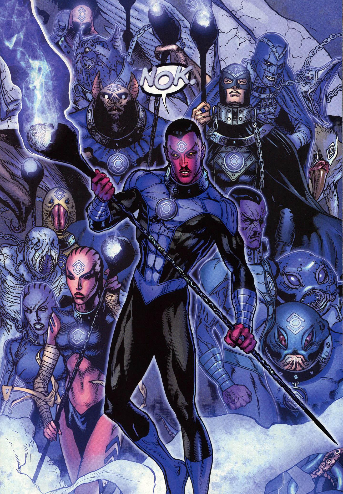

The Indigo lanterns were created by Green lantern Abin sur and Natromo. Abin sur was tasked with going to a Nok that was being attacked by agressive explorers that enslaved the people of the planet. Natromo was one of these people being enslaved and wanted to help his people. One day he and his people found a cavern filled with mysterious purple liquid so the people desprate encoded there weapons with this purple energy and attacked there enslavers with there weapons. When they did the enslavers felt remorse as well regret over there actions. Once the enslavers were defeat Abin sur helped them channel the indigo light of compassion into a ring. They did this because of the Prohecy of the blackest of night. Abin sur to test this power wnet to a crinmal who had killed his daughter and put the ring on her. In doing so she suddenly felt remorse and her actions she became a completly diffrent person from the women who had killed his daughter. Abin sur then gathered some of the worst sociopaths and pschyopaths of the galaxy and out the rings on them. This newly reformed crinmals became known as the indigo tribe or the Indigo lantern corp. There lantern oath is "Tor lorek san, bor nakka mur, Natromo faan tornek wot ur. Ter Lantern ker lo Abin Sur, Taan lek lek nok--Formorrow Sur!
 Here is a orange lantern page. Here is a Red lantern page. Here is a green lantern page. Here is a indigo lantern page. Here is a Blue lantern page. Here is a sinestro corp page. Here is a sinestro corp page.